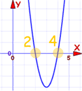
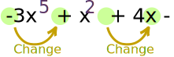
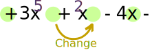
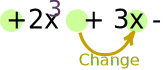

Polynomials: The Rule of Signs
A special way of telling how many positive and negative roots a polynomial has.
A Polynomial looks like this:
 |
| example of a polynomial this one has 3 terms |
Polynomials have "roots" (zeros), where they are equal to 0:

Roots are at x=2 and x=4
It has 2 roots, and both are positive (+2 and +4)
Sometimes we may not know where the roots are, but we can say how many are positive or negative ...
... just by counting how many times the sign changes
(from plus to minus, or minus to plus)
Let me show you with an example:
Example: 4x + x2 − 3x5 − 2
How Many of The Roots are Positive?
First, rewrite the polynomial from highest to lowest exponent (ignore any "zero" terms, so it does not matter that x4 and x3 are missing):
−3x5 + x2 + 4x − 2
Then, count how many times there is a change of sign (from plus to minus, or minus to plus):

The number of sign changes is the maximum number of positive roots
There are 2 changes in sign, so there are at most 2 positive roots (maybe less).
So there could be 2, or 1, or 0 positive roots ?
But actually there won't be just 1 positive root ... read on ...
Complex Roots
There might also be complex roots.
A Complex Number is a combination of a Real Number and an Imaginary Number

But ...
Complex Roots always come in pairs!

Always in pairs? Yes. So we either get:
- no complex roots,
- 2 complex roots,
- 4 complex roots,
- etc
Improving the Number of Positive Roots
Having complex roots will reduce the number of positive roots by 2 (or by 4, or 6, ... etc), in other words by an even number.
So in our example from before, instead of 2 positive roots there might be 0 positive roots:
Number of Positive Roots is 2, or 0
This is the general rule:
The number of positive roots equals the number of sign changes, or a value less than that by some multiple of 2
Example: If the maximum number of positive roots was 5, then there could be 5, or 3 or 1 positive roots.
How Many of The Roots are Negative?
By doing a similar calculation we can find out how many roots are negative ...
... but first we need to put "−x" in place of "x", like this:
And then we need to work out the signs:
- −3(−x)5 becomes +3x5
- +(−x)2 becomes +x2 (no change in sign)
- +4(−x) becomes −4x
So we get:
+3x5 + x2 − 4x − 2
The trick is that only the odd exponents, like 1,3,5, etc will reverse their sign.
Now we just count the changes like before:

One change only, so there is 1 negative root.
But remember to reduce it because there may be Complex Roots!
But hang on ... we can only reduce it by an even number ... and 1 cannot be reduced any further ... so 1 negative root is the only choice.
Total Number of Roots
On the page Fundamental Theorem of Algebra we explain that a polynomial will have exactly as many roots as its degree (the degree is the highest exponent of the polynomial).
So we know one more thing: the degree is 5 so there are 5 roots in total.
What we Know
OK, we have gathered lots of info. We know all this:
- positive roots: 2, or 0
- negative roots: 1
- total number of roots: 5
So, after a little thought, the overall result is:
- 5 roots: 2 positive, 1 negative, 2 complex (one pair), or
- 5 roots: 0 positive, 1 negative, 4 complex (two pairs)
And we managed to figure all that out just based on the signs and exponents!
Must Have a Constant Term
One last important point:
Before using the Rule of Signs the polynomial must have a constant term (like "+2" or "−5")
If it doesn't, then just factor out x until it does.
Example: 2x4 + 3x2 − 4x
No constant term! So factor out "x":
x(2x3 + 3x − 4)
This means that x=0 is one of the roots.
Now do the "Rule of Signs" for:
2x3 + 3x − 4
Count the sign changes for positive roots:

There is just one sign change,
So there is 1 positive root
And the negative case (after flipping signs of odd-valued exponents):
There are no sign changes,
So there are no negative roots
The degree is 3, so we expect 3 roots. There is only one possible combination:
- 3 roots: 1 positive, 0 negative and 2 complex
And now, back to the original question:
2x4 + 3x2 − 4x
Will have:
- 4 roots: 1 zero, 1 positive, 0 negative and 2 complex
Historical Note: The Rule of Signs was first described by René Descartes in 1637, and is sometimes called Descartes' Rule of Signs.